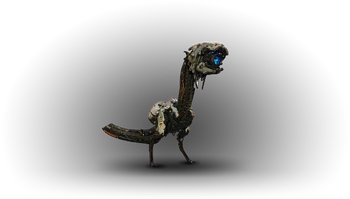
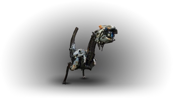
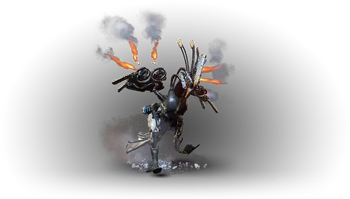

Machine De reconnaissance
Le Veilleur

Unité de reconnaissance réduite, observatrice et agile qui tente d’attaquer une cible en nuée
Composants :
- Corps : Aucune faiblesse et aucune résistance
- Œil : Faible à tout type d’attaque et aucune résistance
Butin :
- Éclat de métal
- Bluette
- Fil électrique
- Noyau de machine – petit
- Lentille de Veilleur
- Cœur de Veilleur
Piratage : PSI
Conseils : Une flèche envoyée sur son œil unique le tuera sur le coup tout comme une élimination silencieuse. Attention tout de même à la
résistance de son corps si vous ratez l’oeil.
Le Veilleur Rouge

Utilise des tactiques de colonie, avec supériorité numérique, mais peut aussi employer des attaques laser concentrées
Composants :
- Corps : Aucune faiblesse et aucune résistance
- Œil : Faible face à tout type d’attaque, aucune résistance
Butin :
- Éclat de métal
- Bluette
- Fil électrique
- Noyau de machine – petit
- Lentille de Veilleur
- Cœur de Veilleur
Piratage : PSI
Conseils : Version améliorée du Veilleur, le Veilleur rouge a plus de vie et fait plus de dégâts. Une flèche envoyée sur son
œil unique le tuera sur le coup tout comme une élimination silencieuse. Méfiez vous de lui lorsqu’il est entouré d’autres machines.
Le Hauttes-Pattes

Son attaque sonique assourdissante, ses propulseurs puissants et son cri d’alarme font de lui un adversaire de taille
Composants :
- Corps : Faible face à l’électricité, aucune résistance
- Poche de commotion : Faible face à tout type d’attaque, aucune résistance
- Antenne de signal d’alarme : Faible face à la déchirure, aucune résistance
- Batterie : Faible face à l’électricité et à la déchirure, aucune résistance
- Aile : Faible face à tout type d’attaque, aucune résistance
Butin :
- Éclat de métal
- Bluette
- Coque d’écho
- Fil électrique
- Noyau de machine – moyen
- Tresse lumineuse
- Lentille de Hautes-Pattes
- Cœur de Hautes-Pattes
Piratage : RHO
Conseils : Le principal danger de ce robot est son antenne de signal d’alarme. Il peut, au bout de quelques secondes, rameuter toutes les machines dans
un large rayon. Vous risquez d’avoir un combat pratiquement perdu d’avance. Il est donc important de bien préparer ce combat. Les attaques de foudre
seront particulièrement efficaces. Vous pouvez viser et détacher l’antenne dans un premier temps puis viser sa batterie ou la poche au niveau de son
coup, mais cette dernière peut-être très résistante avant de provoquer une explosion d’air comprimé qui occasionnera des dégâts de déchirure aux machines
proches. La batterie, elle, provoquera des dégâts électricité aux alentours.